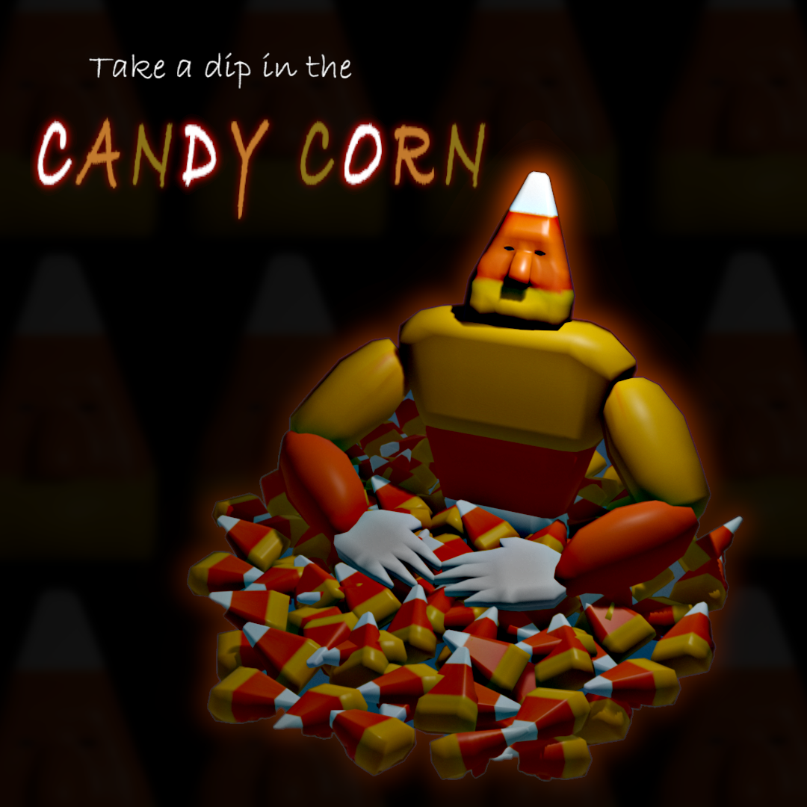
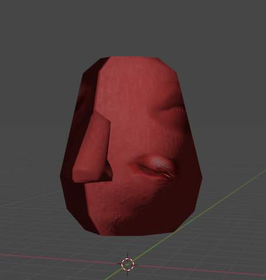
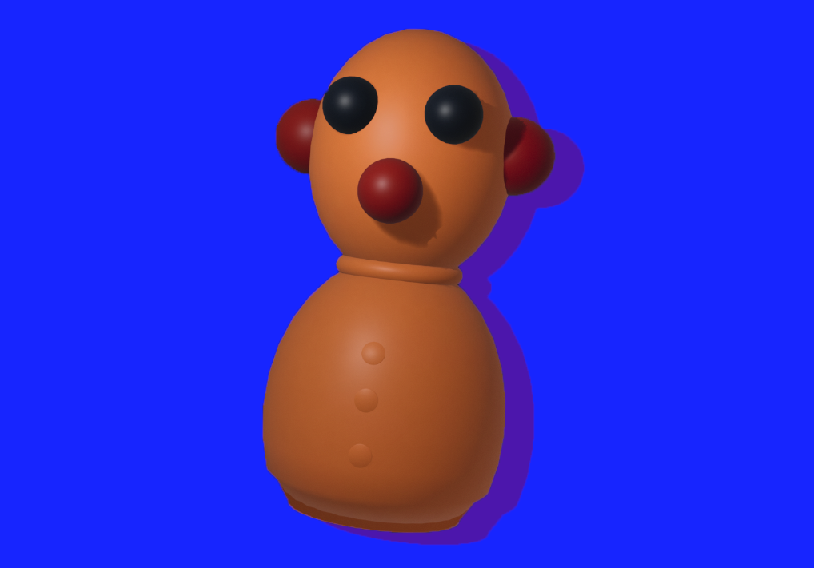
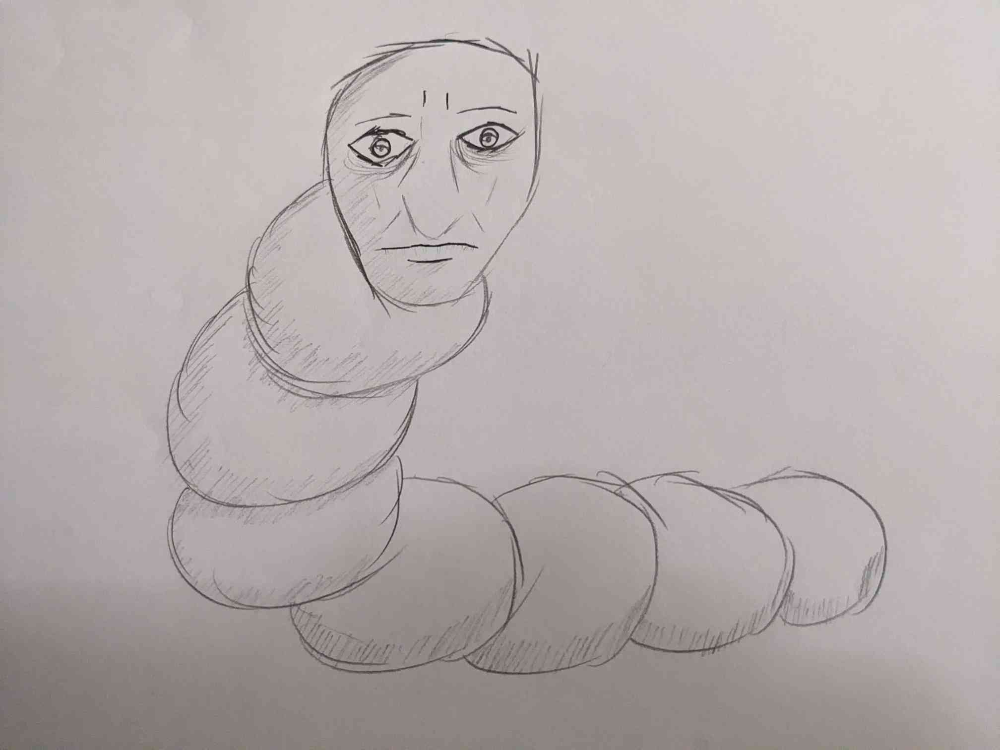

Pieces I've Made:
Halloween, 2021 Piece
This was a peice I had made in 2021, specifcally for halloween. I wanted to practice on something simple, and candycorn is simple in both texture and shape.
Low-Poly Behelit
A low poly 'Behelit' from the dark and brutal series 'Berserk, for this I decided to make to practice texturing. I attempted to use real texures (The eyes and mouth), and cobbled them together in photoshop to use, matching the coloration to the base layer, and healing/ smudging them to sink into the texture as if part of it.
Stress Doll
A rather simple practice just to attempt making something I have in my desk into a 3d object. I felt like doing something more decoartive this one when I made it, so I cut it out and put it on a blue background as well as giving it a shadow.
Catepillar Sketch
An umpromted sketch I had done, there was no reason behind this sketch. I was thinking about the sound of stomping sounds a large catepillar would make and just gave it more human face. I feel like it has potential, seeing it again males me want to attempt to give it colors, a background, a finer outline, but for now it's just a sketch.
Low-Poly Gromit Mug

Another practice I did of an object on my desk to 3d, I used my Gromit Mug for reference. The mug is more a novelty than anything, a coveted relic I'm scared to somehow break due it its fragile structure.